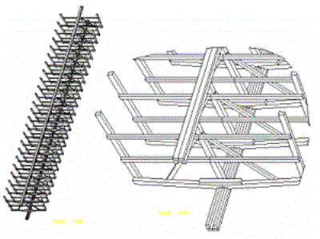
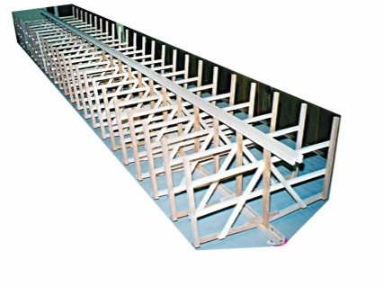
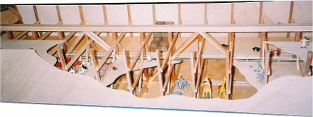
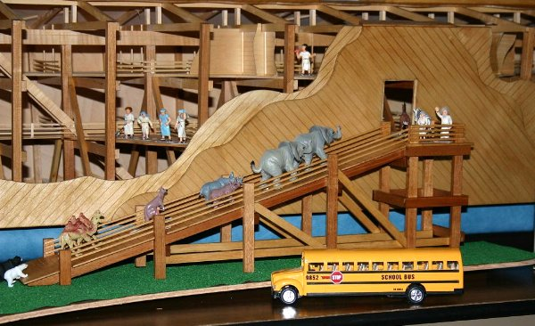
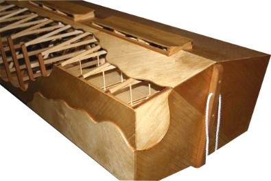
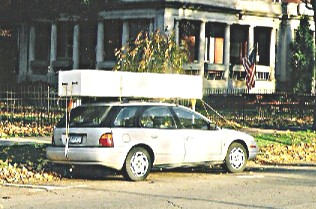

Burlington Connecticut USA
Daniel is a mechanical engineer, and has built small timber boats. The motivation for building his ark was the veracity of God's word, and way the Ark was frequently attacked. He says he was not striving for ultimate accuracy, just demonstrate the idea that the Ark is feasible, rather than fairy tale. Inspired by the Rod Walsh ark, he began in his basement early 2002, and worked on it in spare time. Scale 1:48 or "O" gauge. Using 457mm (18") cubit, that makes the model around 2857mm (9' 4 1/2") long. (See Ark Scale Calculator)
Notice the structural emphasis here - A triangulated structure with a longitudinal truss through the center. Dan modeled the structure using an engineering CAD program. A bit of deadrise too ('V' shaped bottom).


Cutaway sections showing construction detail. A standard scale (1:48) makes it easier to find animals. The image below shows some tell-tale engineering details like diagonally layered deck and hull timbers, and an emphasis on longitudinal bending strength.


Entry ramp of the finished model. Standard O scale (1:48) makes it easy to get animals and vehicles to illustrate the scale.

The ends are square but sloping outwards (rake). Notice the cross-laminated planking. Window skylights (hatches) are segmented to improve roof structure and avoid developing stresses in the skylight itself (In the real thing that is - not the model)
Notice the clear lacquer - Dan has uncovered some great information about pitch, and a clear finish on the real Noah's Ark is not out of the question.
Dan McLarty April 2005:
"Here she is, finished at last. I suppose I'll add some modifications from
time to time, like maybe a skeg as I mentioned earlier, or water collection
apparatus for the window/vent roofs. The skeg will probably have to look much
like a rudder that doesn't turn. The idea here would be to make the center of
effort of the lower part of the ark under the water line to be some distance
from the center of effort of the upper part exposed to wind. Then, in a side
wind, a righting moment would exist and bring the ship about into the wind and
avoid broaching.
The ropes on the ends are for carrying since with all the traveling and
moving I have planned for the ark, I wanted to reduce the chances of dropping it
as much as possible. The animals seem to be more effective outside the ark,
converging in on the loading ramp. When they are inside the ark there are so few
of them that the ark looks empty. It's ironic how skeptics often claim that the
ark could not have held all the animals yet I've purchased every animal I could
from model railroad shops, swap meets and toy stores and haven't enough to fill
but a fraction of the available space. The school bus is there to give a sense
of scale, especially to children who are very familiar with its size (credit
this idea to Tom Baird, the "Gospel Fossil Man", Florida, USA)."
